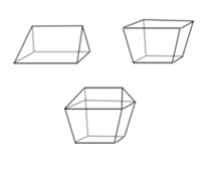

数海拾贝15
古代的中国人给不同形状的体积取了复杂而有趣的名称，“刍童”便是其中的一个例子。刘徽在《九章算术注》里说：“凡积刍，有上下广曰童。甍，谓其屋盖之茨也。是故甍之下广袤与童之上广袤等正。正斩方亭两边，合之即刍甍之形也。”
想要理解这段话的意思，必须先搞清“积刍”的意思。先看什么是刍（音同邹）。
《周礼 · 大宰》：“刍秣之式。”有 注说：“养牛马禾谷也。”所以刍是刍 秣的简称，也就是喂养牛马的草料。 那么，积刍就是堆草垛了。 [此书分享微信wsyy5437]
因此，刘徽的意思应该是这样的。积刍的形状分两类：上下有顶面的，叫作刍童Ġ像屋顶茅草盖那样（只有一个顶面）的，叫作甍。甍的底面的大小跟童的顶面（“上”）的宽度（“广”）和深度（“袤”）大小相同。设想有一个方亭，把它切开，就有了甍和童（见下图）。

上图中，左面是刍甍，右面是刍童，下面是方亭。宋代大科学家沈括在名著《梦溪笔谈》里讨论过很多不同立体形状的体积问题。它们的名字在今天看来都相当古怪有趣，如刍甍、刍童、冥谷、堑堵、鳖蠕、阳马等。